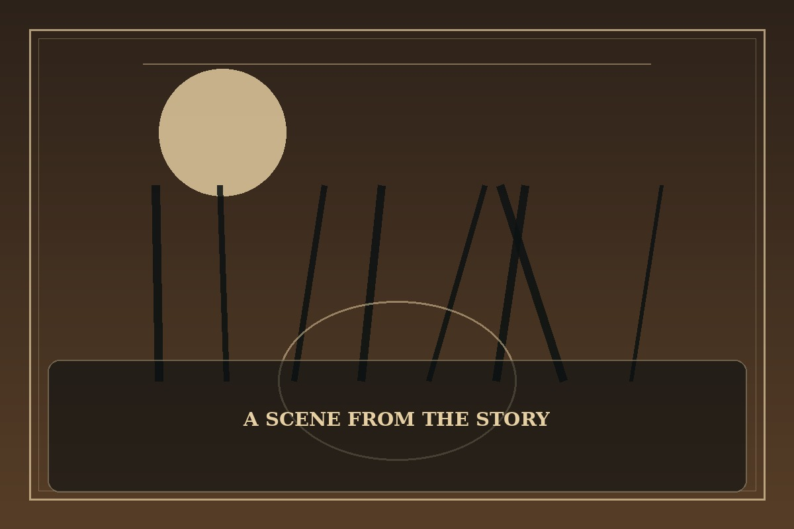

Lookism
Synopsis
A student experiences how differently people are treated based on appearance and status. His changing perspective reveals the pressure behind public confidence and the quiet damage caused by judgment.
Chapter 1: The Face in the Window
Every morning, Daniel checked the reflection in the classroom window before stepping inside. He had learned to prepare for jokes before anyone spoke, because being ready sometimes hurt less than being surprised.
A transfer student sat beside him and treated him exactly like everyone else: asking for notes, sharing lunch, and complaining about homework. Daniel waited for the joke that never came. When a rumor spread about the new student, he saw the same cruel pattern beginning again.
He spoke up even though his voice shook. The room grew awkward, and not everyone agreed, but one person joined him and then another. Daniel walked home without checking his reflection. He had not changed his face or solved the school’s problems; he had simply refused to let silence do the judging for him.

This fan-made sample is an original piece created for a student website project; it is not an official chapter of Lookism.